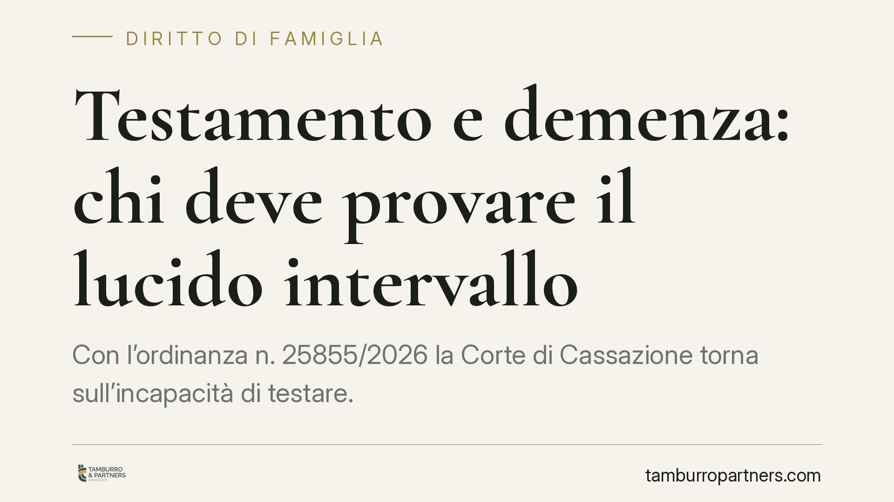

Testamento e demenza: chi deve provare il lucido intervallo
Con l'ordinanza n. 25855/2026 la Corte di Cassazione torna sull'incapacità di testare. Se è provata una condizione di infermità mentale stabile e permanente in un periodo prossimo al testamento, non è più chi impugna a dover dimostrare l'incapacità al momento dell'atto: è chi difende la validità del testamento a dover provare il lucido intervallo. Un principio che cambia gli equilibri nelle liti successorie.

Il caso
Una testatrice affetta da una forma di demenza redige un testamento. Alla sua morte, alcuni eredi ne contestano la validità sostenendo che, al momento della stesura, la donna non fosse in grado di intendere e di volere. Dopo il Tribunale di Milano e la Corte d'Appello, la questione arriva in Cassazione, chiamata a stabilire un punto delicato: su chi grava l'onere della prova quando l'infermità mentale è documentata ma il testamento è stato comunque redatto.
Inquadramento normativo
Il riferimento è l'art. 591 c.c., che disciplina l'incapacità di testare. Il secondo comma, n. 3, stabilisce che sono incapaci di disporre per testamento coloro che, sebbene non interdetti, si provi essere stati per qualsiasi causa, anche transitoria, incapaci di intendere e di volere nel momento in cui hanno redatto il testamento.
La formulazione è chiara: ciò che conta è la capacità nel momento dell'atto. Da qui la regola generale, consolidata in giurisprudenza, secondo cui il testamento si presume valido e chi lo impugna deve dimostrare l'incapacità del testatore proprio al momento della redazione.
La Corte di Cassazione, Sez. II Civile, con l'ordinanza n. 25855/2026, interviene però su un aspetto decisivo. Quando risulta provata una condizione di incapacità stabile e permanente in un arco temporale prossimo alla data del testamento, la presunzione si inverte. Non spetta più a chi impugna dimostrare l'incapacità al momento preciso dell'atto: è chi sostiene la validità del testamento a dover provare che quell'atto è stato compiuto durante un cosiddetto lucido intervallo.
Cosa significa "lucido intervallo"
Il lucido intervallo è una fase, temporanea, in cui il soggetto affetto da una patologia mentale recupera la piena capacità di intendere e di volere. È un concetto usato per giustificare la validità di atti compiuti da chi, in via generale, non sarebbe in grado di comprenderne la portata.
Il punto è che il lucido intervallo non si presume: va dimostrato in concreto, con prove che riguardino quello specifico momento. Nel caso di una demenza, per sua natura degenerativa e tendenzialmente irreversibile, la prova di un simile recupero è particolarmente difficile.
Implicazioni pratiche
La decisione ha effetti rilevanti per chiunque sia coinvolto in una successione contestata.
Per chi impugna il testamento, l'onere probatorio si alleggerisce: non è più necessario ricostruire lo stato mentale del testatore nel singolo giorno della redazione. È sufficiente provare una condizione patologica stabile e permanente in un periodo vicino all'atto, tipicamente attraverso cartelle cliniche, certificazioni mediche e consulenze specialistiche.
Per l'erede che intende difendere la validità del testamento, il quadro si complica. Provata l'infermità permanente, dovrà dimostrare che il testatore, in quel preciso momento, era lucido. Una prova complessa, che spesso richiede il contributo di uno specialista psichiatra e la valutazione di elementi contestuali: le modalità di redazione dell'atto, la presenza di testimoni, la coerenza delle disposizioni.
Il valore della documentazione medica diventa quindi centrale. La diagnosi non serve solo a curare: in sede successoria può determinare l'esito di una controversia.
Cosa fare in concreto
- Conservate la documentazione clinica del proprio caro: diagnosi, cartelle, terapie e valutazioni cognitive costituiscono la base probatoria di ogni futura contestazione.
- Valutate la forma pubblica del testamento quando il testatore presenta patologie che possono incidere sulla capacità: l'intervento del notaio e dei testimoni offre elementi utili a documentare lo stato del disponente.
- Acquisite tempestivamente la cartella clinica in caso di successione contestata: i tempi di conservazione e di accesso ai dati sanitari non sono illimitati.
- Rivolgetevi a un consulente medico-legale prima di avviare o resistere a un giudizio: la valutazione tecnica preliminare orienta la strategia processuale.
- Non date per scontata la validità dell'atto solo perché redatto in forma corretta: la capacità di testare è una questione sostanziale, non formale.
Consigliamo di affrontare queste situazioni con un'analisi preventiva della documentazione disponibile, evitando di impostare la difesa quando la lite è già avanzata.
---
*Contributo informativo a cura di Tamburro & Partners - Avv. Giuseppe Tamburro. Non costituisce parere legale.*
Ogni famiglia ha il suo equilibrio.
Separazione, divorzio, affidamento, assegno: se vuoi un confronto riservato su una specifica situazione, scrivi allo studio. Ti rispondiamo entro un giorno lavorativo.